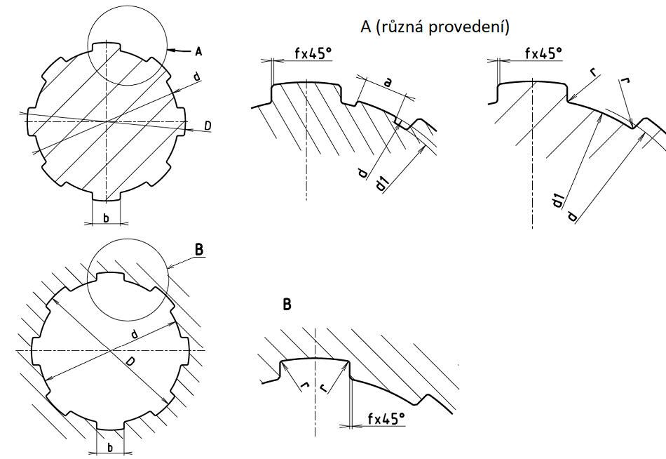

Rozměry v milimetrech
| Počet per (drážek) z |
Malý průměr d |
Velký průměr D |
Šířka pera (drážky) b |
Minimální průměr d1min |
Minimální šířka amin |
Zkosení nebo zaoblení | Poloměr zaoblení rmax |
Účinná plocha na 1 mm délky A' [mm2] |
|
|---|---|---|---|---|---|---|---|---|---|
| f | úchylky | ||||||||
| 6 | 11 | 14 | 3,0 | 9,9 | - | 0,3 | 0 +0,2 |
0,2 | 4,0 |
| 13 | 16 | 3,5 | 12,0 | ||||||
| 16 | 20 | 4,0 | 14,5 | 6,3 | |||||
| 18 | 22 | 5,0 | 16,7 | ||||||
| 21 | 25 | 19,5 | 1,95 | ||||||
| 23 | 28 | 6,0 | 21,3 | 1,34 | 7,9 | ||||
| 26 | 32 | 23,4 | 1,65 | 0,4 | 0,3 | 9,9 | |||
| 28 | 34 | 7,0 | 25,9 | 1,70 | |||||
| 8 | 32 | 38 | 6,0 | 29,4 | - | 13,2 | |||
| 36 | 42 | 7,0 | 33,5 | 1,02 | |||||
| 42 | 48 | 8,0 | 39,5 | 2,57 | |||||
| 46 | 54 | 9,0 | 42,7 | - | 0,5 | 0 +0,3 |
0,5 | 18,0 | |
| 52 | 60 | 10,0 | 48,7 | 2,44 | |||||
| 56 | 65 | 52,2 | 2,50 | 21,0 | |||||
| 62 | 72 | 2,0 | 57,8 | 2,40 | 24,0 | ||||
| 10 | 72 | 82 | 67,4 | - | 30,0 | ||||
| 82 | 92 | 77,1 | 3,00 | ||||||
| 92 | 102 | 14,0 | 87,3 | 4,50 | |||||
| 102 | 112 | 16,0 | 97,7 | 6,30 | |||||
| 112 | 125 | 18,0 | 106,3 | 4,40 | 41,0 | ||||